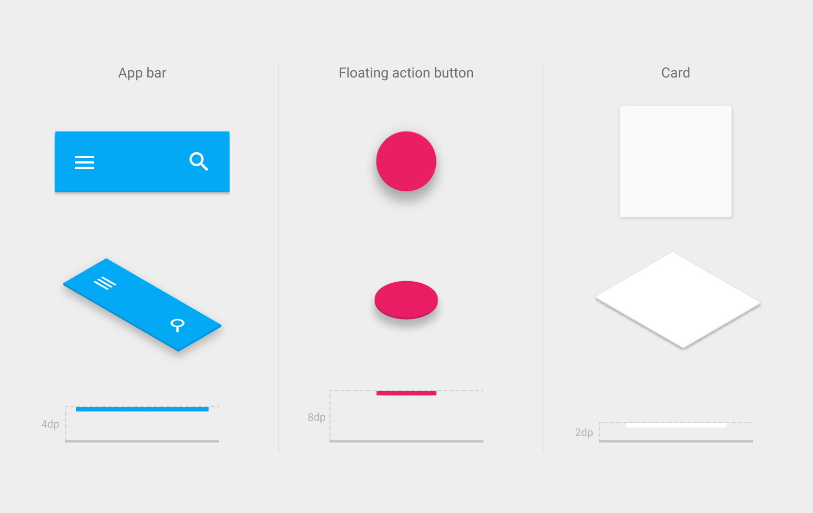
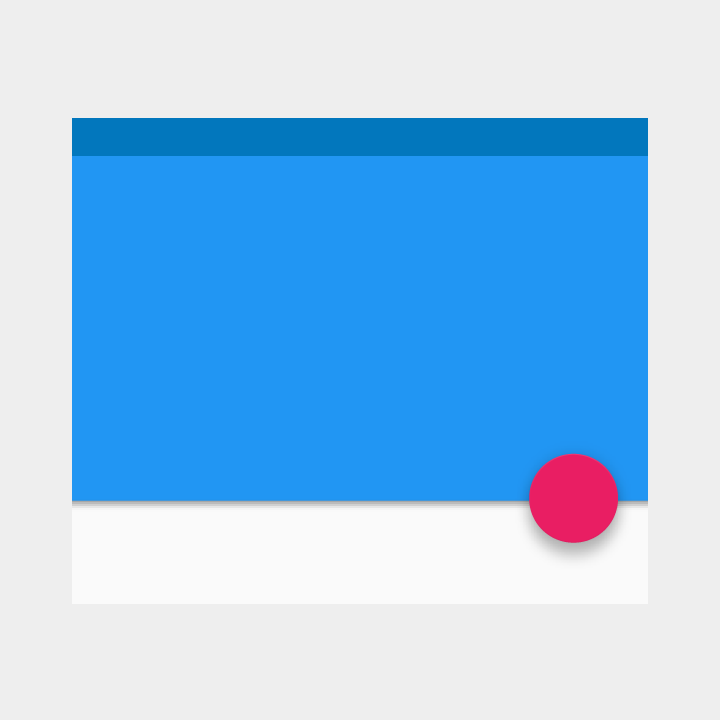
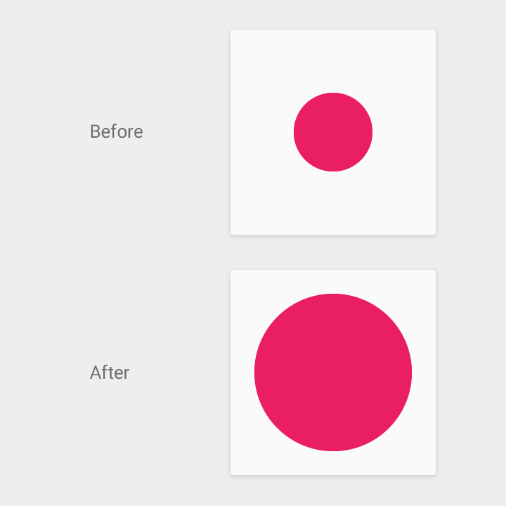
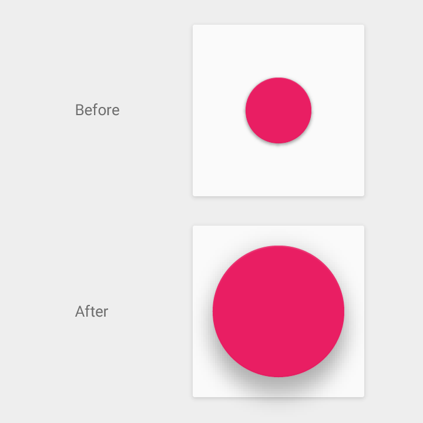

There are parallels between organizing objects in the physical world and arranging objects in space in material design. In the physical world, objects can be stacked or affixed to one another, but cannot pass through one another. The objects cast shadows and reflect light.
These qualities apply to objects in material design and help create a spatial model that can be consistently applied across apps in ways that are familiar to users.
Elevation
Elevation
Elevation is the relative position of an object along its parent’s z-axis. Elevation is the relative value between parent and child objects.
Elevation is measured in the same units as the x and y axes, typically in density independent pixels (dps). Since material has a standard 1dp thickness, all elevation distances are measured from one top surface to another top surface.
Resting elevation
All material objects have a resting elevation, whether the object is a small component or a sheet that spans the entire display.

Examples of typical resting elevations for components.
In the static state, the resting elevation for an object does not change. It is constant throughout an app. If an object changes elevation, it should return to its resting elevation as soon as possible.
The resting elevation for a given component type is consistent across apps throughout a platform. However, that same component type may have different resting elevations from platform to platform depending on the depth of the environment (e.g., TV has a greater depth than mobile or desktop).
Responsive elevation and dynamic elevation offsets
Certain component types have responsive elevation, which means they change their elevation in response to user input or system events. Different component states (e.g., normal, focused, pressed) may result in varying elevation changes, which are consistently implemented using dynamic elevation offsets.
Dynamic elevation offsets are relative to the resting state of the component, and act as the goal or target elevation for the component to move towards for a given component state. They also ensure that elevation changes for a given action are consistent across a component type. For example, all components that lift on press have the same elevation change, relative to their current/resting elevation.
Once the input event is completed or cancelled, the component will return to its resting elevation.
Functional shadows
Shadows provide several important visual cues about the arrangement of objects in space. Shadows are the only visual affordance indicating the amount of separation between surfaces. The elevation of an object determines the visual appearance of its shadow.
Without a shadow, there is nothing to indicate that the floating action button is a separate surface from the background surfaces.
Crisp shadows indicate both the floating action button and the app bar are separate surfaces very close to the background surface.

Softer, larger shadows indicate the floating action button is at a higher elevation than the app bar.
In motion, shadows also provide cues about an object’s direction of movement. This is another useful tool to indicate whether the distance between surfaces is increasing or decreasing.

Without a shadow to indicate elevation, it’s unclear whether this circle is scaling at the same elevation, or simply increasing its elevation.

The shadow grows softer and larger as the object’s elevation increases and grows crisper and smaller as the elevation decreases.
In this case, the consistent shadow helps the user understand that the object is changing shape as opposed to changing elevation.
Object relationships
How you organize objects in an app determines how objects or collections of objects move in relation to one another. Objects can move independently of each other, or their movement can be constrained to, and dependent upon, their container. Containers and the objects they contain have a parent-child relationship. Every object has a single parent, and may or may not have one or more children.
Children inherit transformation properties from their parent, such as position, rotation, scale, and elevation. For example, in the case of a scrolling card collection where all cards move together, the cards are siblings and they are all children of the card collection container that handles the scrolling movement.
The hierarchy of parents and children determines how objects and groups of objects interact with one another. For example, child objects have minimal z-axis separation from their parent; other objects do not get inserted between parents and children.
The raised button (child) scrolls off screen as its parent content scrolls.
The cards (siblings, and children of the card collection) scroll off screen as the floating action button (its own parent) remains in place.